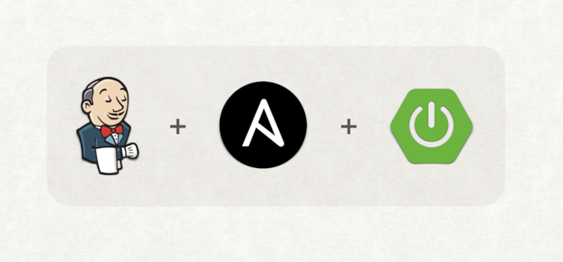
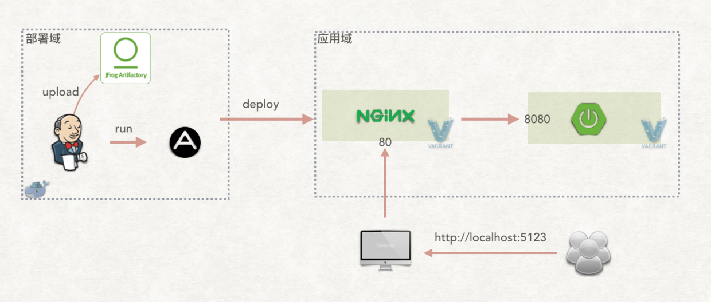
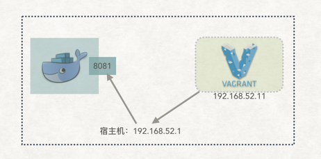

使用 Jenkins + Ansible 实现 Spring Boot 自动化部署101

本文要点： 1. 设计一条 Spring Boot 最基本的流水线：包括构建、制品上传、部署。 1. 使用 Docker 容器运行构建逻辑。 1. 自动化整个实验环境：包括 Jenkins 的配置，Jenkins agent 的配置等。
1. 代码仓库安排
本次实验涉及以下多个代码仓库：
% tree -L 1
├── 1-cd-platform # 实验环境相关代码
├── 1-env-conf # 环境配置代码-实现配置独立
└── 1-springboot # Spring Boot 应用的代码及其部署代码
1-springboot 的目录结构如下：
% cd 1-springboot
% tree -L 1
├── Jenkinsfile # 流水线代码
├── README.md
├── deploy # 部署代码
├── pom.xml
└── src # 业务代码
所有代码，均放在 GitHub：https://github.com/cd-in-practice
2. 实验环境准备
笔者使用 Docker Compose + Vagrant 进行实验。环境包括以下几个系统： * Jenkins * 1 Jenkins master，全自动安装插件、默认用户名密码：admin/admin。 * Jenkins agent * 2 Jenkins agent 运行在 Docker 容器中，共启动两个。 * Artifactory * 1 一个商业版的制品库。笔者申请了一个 30 天的商业版。
使用 Vagrant 是为了启动虚拟机，用于部署 Spring Boot 应用。如果你的开发机器无法使用 Vagrant，使用 VirtualBox 也可以达到同样的效果。但是有一点需要注意，那就是网络。如果在虚拟机中要访问 Docker 容器内提供的服务，需要在 DNS 上或者 hosts 上做相应的调整。所有的虚拟机的镜像使用 Centos7。
另，接下来笔者的所有教程都将使用 Artifactory 作为制品库。在此申明，笔者没有收 JFrog——研发 Artifactory 产品的公司——任何广告费。 笔者只是想试用商业产品，以便了解商业产品是如何应对制品管理问题的。
启动 Artifactory 后，需要添加 “Virtual Repository” 及 “Local Repository”。具体请查看 Artifactory 的官方文档。如果你当前使用的是 Nexus，参考本教程，做一些调整，问题也不大。
如果想使用已有制品库，可以修改 1-cd-platform 仓库中的 settings-docker.xml 文件，指向自己的制品库。
实验环境近期的总体结构图如下：

之所以说是“近期的”，是因为上图与本篇介绍的结构有小差异。本篇文章还没有介绍 Nginx 与 Springboot 配置共用，但是总体不影响读者理解。
3. Springboot 应用流水线介绍
Springboot 流水线有两个阶段： 1. 构建并上传制品 2. 部署应用
流水线的所有逻辑都写在 Jenkinsfile 文件。接下来，分别介绍这两个阶段。
3.1 构建并上传制品
此阶段核心代码：
docker.image('jenkins-docker-maven:3.6.1-jdk8')
.inside("--network 1-cd-platform_cd-in-practice -v $HOME/.m2:/root/.m2") {
sh """
mvn versions:set -DnewVersion=${APP_VERSION}
mvn clean test package
mvn deploy
"""
}
它首先启动一个装有 Maven 的容器，然后在容器内执行编译、单元测试、发布制品的操作。
而 mvn versions:set -DnewVersion=${APP_VERSION} 的作用是更改 pom.xml 文件中的版本。这样就可以实现每次提交对应一个版本的效果。
3.2 部署应用
注意： 这部分需要一些 Ansible 的知识。
首先看部署脚本的入口 1-springboot/deploy/playbook.yaml：
---
- hosts: "springboot"
become: yes
roles:
- {"role": "ansible-role-java", "java_home": "{{JAVA_HOME}}"}
- springboot
先安装 JDK，再安装 Spring Boot。JDK 的安装，使用了现成 Ansible role: https://github.com/geerlingguy/ansible-role-java。
重点在 Spring Boot 部署的核心逻辑。它主要包含以下几部分：
- 创建应用目录。
- 从制品库下载指定版本的制品。
- 生成 Systemd service 文件（实现服务化）。
- 启动服务。
以上步骤实现在 1-springboot/deploy/roles/springboot 中。
流水线的部署阶段的核心代码如下：
docker.image('williamyeh/ansible:centos7').inside("--network 1-cd-platform_cd-in-practice") {
checkout([$class: 'GitSCM', branches: [[name: "master"]], doGenerateSubmoduleConfigurations: false,
extensions: [[$class: 'RelativeTargetDirectory', relativeTargetDir: "env-conf"]], submoduleCfg: [],
userRemoteConfigs: [[url: "https://github.com/cd-in-practice/1-env-conf.git"]]])
sh "ls -al"
sh """
ansible-playbook --syntax-check deploy/playbook.yaml -i env-conf/dev
ansible-playbook deploy/playbook.yaml -i env-conf/dev --extra-vars '{"app_version": "${APP_VERSION}"}'
"""
}
它首先将配置变量仓库的代码 clone 下来，然后对 playbook 进行语法上的检查，最后执行 ansible-playbook 命令进行部署。--extra-vars 参数的 app_version 用于指定将要部署的应用的版本。
3.3 实现简易指定版本部署
在 1-springboot/Jenkinsfile 中实现了简易的指定版本部署。核心代码如下： 1. 流水线接受参数
parameters { string(name: 'SPECIFIC_APP_VERSION',
defaultValue: '', description: '') }
- 如果指定了版本，则跳过构建阶段，直接执行部署阶段
groovy stage("build and upload"){ // 如果不指定部署版本，则执行构建 when { expression{ return params.SPECIFIC_APP_VERSION == "" } } // 构建并上传制品的逻辑 steps{...} }之所以说是“简易”，是因为部署时只指定了制品的版本，并没有指定的部署逻辑和配置的版本。这三者的版本要同步，部署才真正做到准确。
4. 配置管理
所有的配置项都放在 1-env-conf 仓库中。Ansible 执行部署时会读取此仓库的配置。
将配置放在 Git 仓库中有两个好处： 1. 配置版本化。 2. 任何配置的更改都可以被审查。
有好处并不代表没有成本。那就是开发人员必须开始关心软件的配置（笔者发现不少开发者忽视配置项管理的重要性。）。
本文重点不在配置管理，后面会有文章重点介绍。
5. 实验环境详细介绍
事实上，整个实验，工作量大的地方有两处：一是 Spring Boot 流水线本身的设计；二是整个实验环境的自动化。读者朋友之所以能一两条简单的命令就能启动整个实验环境，是因为笔者做了很多自动化的工作。笔者认为有必要在本篇介绍这些工作。接下来的文章将不再详细介绍。
5.1 解决流水线中启动的 Docker 容器无法访问 http://artifactory
流水线中，我们需要将制品上传到 artifactory（settings.xml 配置的仓库地址是 http://artifactory:8081），但是发现无法解析 host。这是因为流水线中的 Docker 容器所在网络与 Docker compose 创建的网络不同。所以，解决办法就是让流水线中的 Docker 容器加入到 Docker compose 的网络。
具体解决办法就是在启动容器时，加入参数：--network 1-cd-platform_cd-in-practice
5.2 Jenkins 初次启动初始化
在没有做任何设置的情况启动 Jenkins，会出现一个配置向导。这个过程必须是手工的。笔者希望这一步也是自动化的。Jenkins 启动时会执行 init.groovy.d/目录下的 Groovy 脚本。
5.3 虚拟机中如何能访问到 http://artifactory ？
http://artifactory 部署在 Docker 容器中。Spring Boot 应用的制品要部署到虚拟机中，需要从 http://artifactory 中拉取制品，也就是要在虚拟机里访问容器里提供的服务。虚拟机与容器之间的网络是不通的。那怎么办呢？笔者的解决方案是使用宿主机的 IP 做中转。具体做法就是在虚拟机中加一条 host 记录：
machine.vm.provision "shell" do |s|
s.inline = "echo '192.168.52.1 artifactory' >> /etc/hosts"
end
以上是使用了 Vagrant 的 provision 技术，在执行命令 vagrant up 启动虚拟机时，就自动执行那段内联 shell。192.168.52.1 是虚拟宿主机的 IP。所以，虚拟机里访问 http://artifactory:8081 时，实际上访问的是 http://192.168.52.1:8081。
网络结构可以总结为下图：

后记
目前遗留问题： 1. 部署时制品版本、配置版本、部署代码版本没有同步。 2. Springboot 的配置是写死在制品中的，没有实现制品与配置项的分离。
这些遗留问题在后期会逐个解决。就像现实一样，经常需要面对各种遗留项目的遗留问题。
附录
- 使用 Jenkins + Ansible 实现自动化部署 Nginx：https://jenkins-zh.cn/wechat/articles/2019/04/2019-04-25-jenkins-ansible-nginx/
- 简单易懂 Ansible 系列 —— 解决了什么：https://showme.codes/2017-06-12/ansible-introduce/